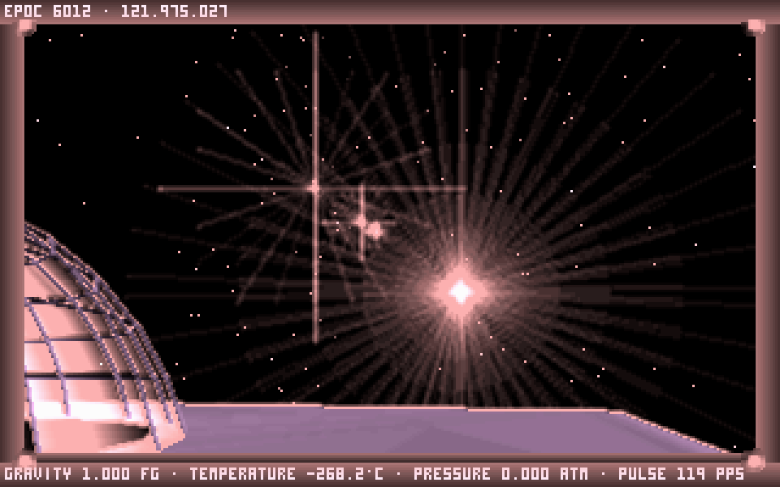
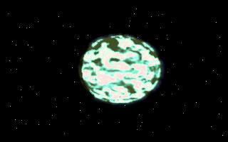
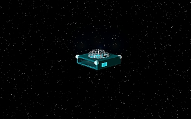
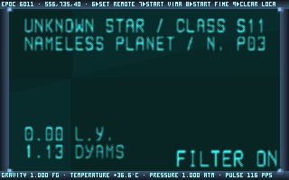
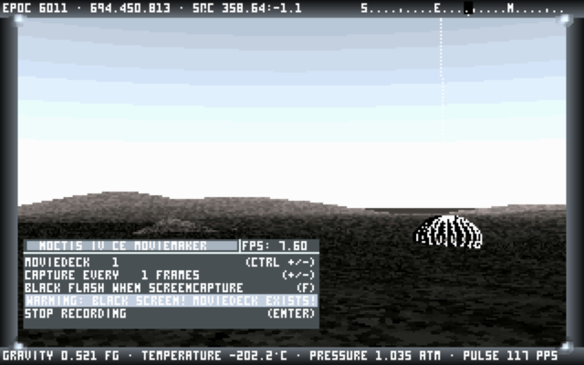

The universe is not waiting for you.
Noctis IV OM brings Noctis IV Plus and Noctis IV LR together into a modern native game: a vast, quiet space-exploration experience about choosing a star, crossing the dark, and being the first person to see what is there.
Download Noctis IV OM
Play instantly in your browser with saves kept on your device, or download standalone, fully self-contained portable releases featuring native Gamepad & Joystick flight, in-cockpit Image Archive & Export (F4 / D) for downloading snapshots and panoramas, GOES GALLERY & VIEW commands, deterministic Scale2x / EPX Upscaling (F7), vintage GLSL CRT Shader (F6), jitter-free Sub-Pixel Geometry, and interactive timewarp slider (1x–5000x). No installers and no DOSBox required.
Windows Release
Native 64-bit executable with all required runtime assets included. Runs on Windows 10 & 11 (and verified under Wine on Linux).
Download for Windows (.zip)- Extract the downloaded
.zipfile anywhere. - Double-click
nivlr.exeto begin exploring. - Saves, starmaps, and screenshots stay right in the game folder.
Linux Release
Verified on Ubuntu 24.04+ (Native Wayland & X11). Self-contained release tarball configured in portable mode by default.
Download for Linux (.tar.gz)- Extract the archive:
tar -xzf Noctis-IV-OM-linux-x86_64.tar.gz - Open a terminal in the folder and launch
./nivlr - All player data is preserved beside the executable.
Play in Browser
The complete game in any modern browser with WebGL2. No install; progress autosaves in your browser.
Launch in Browser- Click Launch, then fly with
W A S D, Gamepad, and mouse. - Press
F10to capture the mouse for mouselook. - Clearing this site's browser data erases your save.
Migrating an old DOS profile?
Run ./nivlr --prepare-user-data --migrate-from "/path/to/old Noctis"
to safely import your catalogs, saves, and screenshots without overwriting anything.
In-Game Views
Rendered in authentic retro-3D with procedural planetary generation, smooth software shading, and real-time astronomical coordinate tracking.





The World of Noctis
You explore the Noctis galaxy in a vehicle called a Stardrifter. You are a Felysian: a race descended from large cat-like creatures indigenous to the world Felysia in the Balastrackonastreyan system.
There are no enemies to defeat and no campaign pushing you onward. In epoc 5991, the Stardrifters returned to Balastrackonastreya to find the system empty; the Felisians were gone, leaving only ruins on their terraformed moons.
Now, in epoc 6012, you drift alone through a galaxy of billions of uncharted worlds. You read the instruments, pick a distant point of light, travel to it using lithium-powered Vimana drives, and decide whether to descend to the surface.
Noctis IV OM is an independent hybrid: it uses the clean, native C++20 foundation of Noctis IV LR and preserves the complete feature set of Noctis IV Plus—including the expanded GOESnet star catalog, cockpit controls, Moviemaker recording, and authentic visual balance.
Primary Directives: Your First Voyage
Noctis expects you to learn your ship, not follow a quest marker. Here is how to take your Stardrifter from orbit down to another world:
-
01Navigation & Orientation
Orient Yourself Aboard the Ship
Move around the cabin with WASD and use the mouse to look and select. The central console operates flight drives; the wall terminals hold navigation, GOES.Net, and star catalogs. Press F1 at any time for the in-cockpit reminder.
-
02Starmap Telemetry
Access GOES.Net
Walk to the GOES.Net terminal on the right-hand wall. Type
HELPfor command syntax. TypeST MIRACLEto lock the legendary star MIRACLE as your remote jump target, orST BALASTRACKONASTREYAto visit the ancestral Felysian home. -
03Interstellar Transit
Engage Vimana Flight
Step back to the central console. Press 5 for the flight-control page, then 7 to ignite the lithium-powered Vimana drive. Watch the distance counter drop as you cross interstellar space.
-
04Orbital Insertion
Local Approach
Once you reach the destination system, inspect its planets on the left terminal. Press 5 then 8 to begin fine orbital approach toward your chosen world. Check planetary gravity, pressure, and atmosphere before descending.
-
05Touchdown
Deploy the Surface Capsule
Press 5 then 9. The central cupola of the Stardrifter doubles as your surface capsule. Choose your touchdown coordinates in the planetary atlas using the arrow keys, press Enter, and drop through the floor down to the surface below.
Destination: FELYSIA
FELYSIA is a lush, landable world in the BALASTRACKONASTREYA system and the recommended maiden voyage.
At the GOES console, enter ST BALASTRACKONASTREYA, complete the interstellar jump, then enter
ST FELYSIA for local approach and surface landing.
Stardrifter Input Matrix
Menu pages follow a consistent pattern: select a page with a number or key, then press 6 through 9 to select row options.
Move & Look
- W A S D
- Walk around the cabin
- Mouse
- Look and aim helmet visor
- PgUp / PgDn
- Raise/lower anti-radiation visor
- + −
- Cabin illumination intensity
Guidance & Drives
- 5
- Flight-control menu page
- R
- Onboard devices & systems
- P
- Pilot preferences & audio
- 6–9
- Activate corresponding menu row
Surface Exploration
- J
- Jump
- L
- Toggle suit torch / headlamp
- Space
- Fire atmospheric jetpack
- C
- Release jetpack steering lock
- Arrow keys
- Select landing zone in atlas
Display & Audio
- F11 / Alt+Enter
- Toggle fullscreen mode
- F8
- Cycle 4:3 CRT / 16:10 / 16:9 aspect
- F7
- Cycle pixel / Scale2x / smooth upscale
- F6
- Toggle vintage CRT monitor shader
- F9 / Ctrl+M
- Toggle procedural audio mute
- F2
- Visual effects panel
- F3
- Open Moviemaker suite
- F4
- Image archive viewer